More efficient version of symbol-table where the keys are strings.
1. R-way Tries
Two implementations of symbol tables that we've seen:
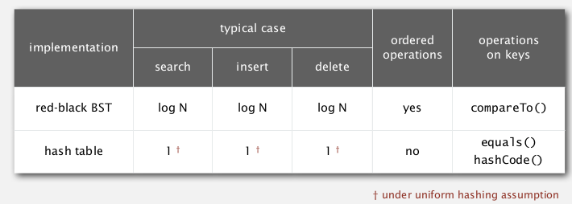
when keys are strings:
(L=string length, N=number of strings, R=radix)
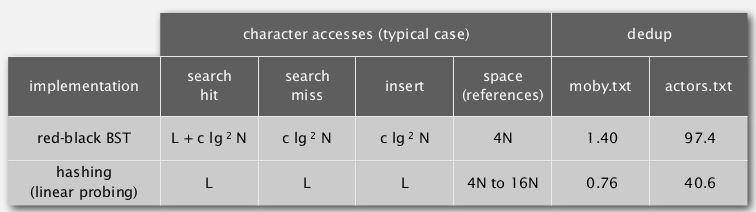
for string keys ⇒ do better by avoiding examing the entire key.
goal: faster than hashtable, more flexible than BST !
String Symbol Table API
public class StringST<V>{// implements ST<String, V>
public void put(String key, V val);
public V get(String key);
public void delete(String key);
}
R-way tries
A trie is a tree where:
- except the root, each node store characters (instead of string keys) — in fact the chars are stored in links
- each node has R children
- store value in node if the node corresponds to the last char in key.
example: (a trie
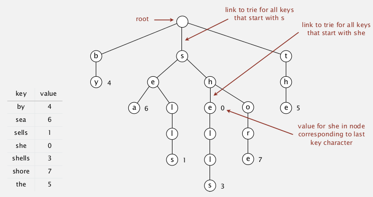
- search in a trie
get()
hit if when search ends the node has a non-null value
miss if reach a null link or have null value when search ends.
- insertion in a trie
put()
follow the links as the chars indicate in the key
→ if meet null links: create new node
→ when reach last char in key: set the value of the node
Java implementation
trie node class:
in each node use an array of size R to store links...
private static class Node{
private Object val;// because cannot create arries of generic type (array of Node)
private Node[] next = new Node[R];// chars are implicitly defined by link index
}
另外关于为什么内部类Node声明为static, 参考这里:
http://www.geeksforgeeks.org/static-class-in-java/
implementation: use private recursive methods, 和BST的实现类似, 定义一个递归的private函数, 返回插入后的Node, 很有用.
public class TrieST<Value> {
pirvate final int R = 256; // ASCII chars
private Node root = new Node();
private static class Node{
private Object val;// because cannot create arries of generic type (array of Node)
private Node[] next = new Node[R];// chars are implicitly defined by link index
}
public void put(String key, Value val){
this.put(root, key, val, 0);// use private recursive helper method
}
private Node put(Node x, String key, Value val, int d){
// `d` is the index of char to put
// returns the inserted node
if (x==null) x = new Node();
if (key.length()==d) x.val = val;
else{
char c = key.charAt(d);
x.next[c] = put(x.next[c], key, val, d+1);
}
return x;
}
public boolean contains(String key){return get(key)!=null;}
public Value get(String key){
Node nd = this.get(root, key, 0);
if(nd==null) return null;
return (Value) x.val; // cast back
}
private Node get(Node x, String key, int d){
// returns the node that contains val for key
if(x==null) return null;
if(d==key.length()) return x;
char c = key.charAt(d);
else return get(x.next[c], key, d+1);
}
}
delete node in trie:
- find the node and set the val to null
- if a node has 0 links(leaf) and val==null: delete it and recursivly go up.
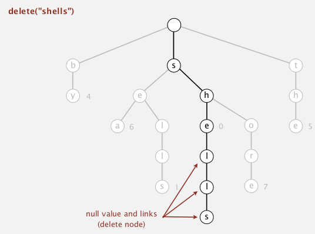
analysis
time:
search hit — L nodes examined.
serach miss — sublinear in L
space:
each node has R links (possibly null) — too much memory for large R !
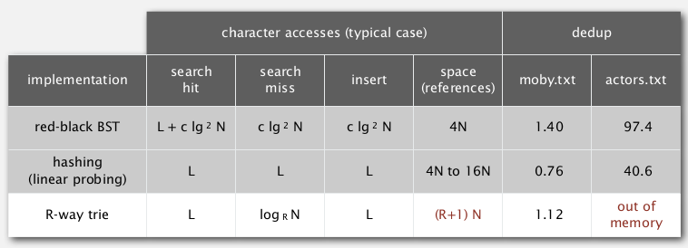
Application
interview question: data structure for spell checking.
2. Ternary Search Tries
Solution to the memory issue of R-way tries — much fewer null links. ternery=tuple of 3...
TST:
- store chars (and vals) explicitly in nodes
- each node has 3 children:
- smaller, larger: TST that starts with char smaller/bigger than its char c.
- equal: the TST with keys that starts with this char c
- (所以除了用smaller/larger连接的节点在Rway trie里属于同一层
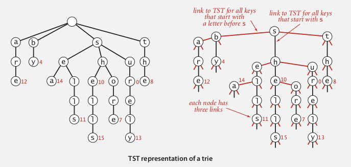
类似于3-way radix sort(同一篇paper里提出的), 有有点RBTree的意思...
searching in TST: quite similar to BST search, will go down ("equal" or "middle") when the current node matchs current char...
Implementation
Node class:
private class Node{
private Value val;
private char c;// store char explicitly
private Node left, mid, right;
}
TST class (again use recursive helper functions)
有一种写BST代码的感觉, 另外由于这次char是显式存在node里, 代码反而更好理解了...
public class TST<Value>{
private class Node{...};
private Node root;
public void put(String key, Value val){
this.put(root, key, val, 0);
}
private Node put(Node x, String key, Value val, int d){
char c = key.charAt(d);// char to process
if(x==null) x = new Node(c);
if(c==x.c) {
if(d==key.length()-1) x.val = val;
else x.mid = put(x.mid, key, val, d+1);// d+1 means we go down one level
}
else if (c<x.c) x.left = put(x.left, key, val, d);// do not increment if the current char is not matchd
else x.right = put(x.right, key, val, d);
return x;
}
public Value get(String key){
Node nd = this.get(root, key, 0);
if(nd==null) return null;
return nd.val;
}
private Node get(Node x, String key, int d){
if(x==null) return null;
char c = key.charAt(d);
if(x.c==c) {
if(d==key.length()-1) return x;
else return get(x.mid, key, d+1);
}
else if(c<x.c) return get(x.left, key, d);
else return get(x.right, d);
}
}
Hybrid of TST and Rway trie
- at root: do R^2 branching
- other nodes are TSTs
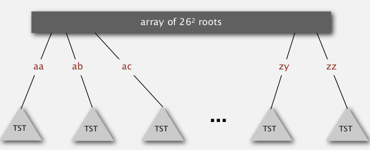
analysis
space cost: linear in N.
time: if keys arrive in rand order... (can use rotation to get worst-case guarantee..)
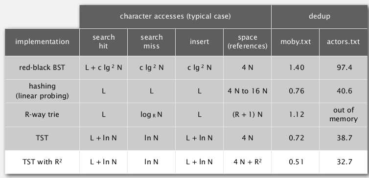
Hashing vs. TST
Hashing:
- need to check entire key no matter hit or miss
- performance relies on hash functions
- donot support ordered operations
TST:
- examines just enough chars
- support ordered operations
3. Character-Based Operations
some very useful char-based operations:
- prefix match
- wildcard match: use a dot to represent any char
- longest prefix: find the key that is the longest prefix of a string
API
public class TrieST<Value>{
// functions decalred before..
Iterable<String> keys;
Iterable<String> keysWithPrefix(String s);
Iterable<String> keysThatMatch(String s);
Iterable<String> longestPrefixOf(String s);
}
keys(): ordered iteration
keys(): just an inorder-traversal of the Rway trie →dfs, + maintain the chars in the path (root to current node).
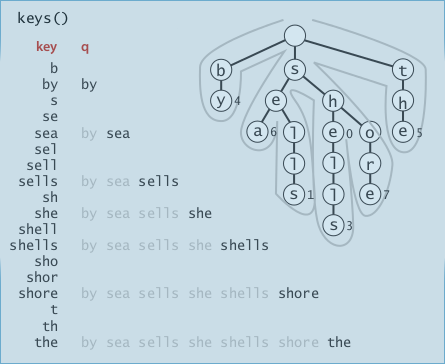
public Iterable<String> keys(){
Queue<String> q = new Queue<String>();
collect(root, "", q);// helper fcn
return q;
}
private void collect(Node x, String pathstr, Queue q){
if(x==null) return;
if(x.val!=null)// if this is a key
q.enqueue(pathstr);// pathstr is the string of chars from root to x
for(char c=0;c<R;c++) // dfs
collect(x.next[c], pathstr+c, q);
}
prefix match
very useful: ex. autocomplete, search bar, ...
implementation⇒ just find the end of that prefix, then call keys() on the subtrie.
之前写的俩helper function这里发挥作用了:
public Iterable<String> keysWithPrefix(String prefix){
Node subtrieRoot = get(root, prefix, 0);
Queue<String> q = new Queue<String>();
collect(subtrieRoot, prefix, q);
return q;
}
longest prefix
⇒ just do a search and keep track of the longest key that we encounterd.
public String longestPrefixOf(String s){
int len = search(root, s, 0, 0);
return s.substring(0, len);
}
private int search(Node x, String s, int d, int len){
if(x==null) return len;
if(x.val!=null) len=d;// this is the current longest prefix
if(d==s.length()) return length;
char c = s.charAt(d);
return search(x.next[c], s, d+1, len);
}
application: T9 texting
classique... G面试以及X的TP里都有涉及过...
- first: generate all string combinations
- second: call get() on the trie of dictionaries.
Other Variants
Patricia trie
improvement: remove the one-eay branching (put >1 chars in a node).
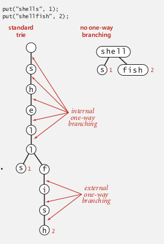
suffix tree
- patricia tree of the suffix
- linear time construction
- ongest repeated substring, longest common substring, longest palindromic substring, substring search, tandem repeats... 好有用!!...
Summery
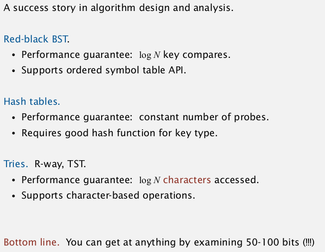
Part 7 of series «Algorithms Princeton MOOC II»：
- [Algorithms II] Week 1-1 Undirected Graphs
- [Algorithms II] Week 1-2 Directed Graphs
- [Algorithms II] Week 2-1 Minimum Spanning Trees
- [Algorithms II] Week 2-2 Shortest Paths
- [Algorithms II] Week 3-1 Maximum Flow
- [Algorithms II] Week 3-2 Radix Sorts
- [Algorithms II] Week 4-1 Tries
- [Algorithms II] Week 4-2 Substring Search
- [Algorithms II] Week 5-1 Regular Expressions
- [Algorithms II] Week 5-2 Data Compression
- [Algorithms II] Week 6-1 Reductions
- [Algorithms II] Week 6-2 Linear Programming
- [Algorithms II] Week 6-3 Intractability
Disqus 留言